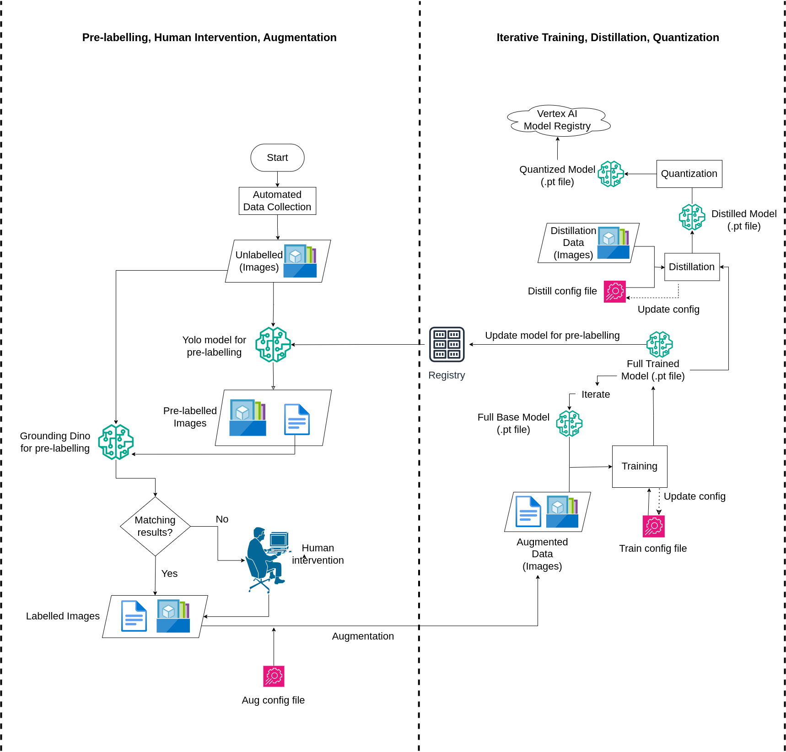

Pipeline Overview
The figure below illustrates the complete CI/CD/CT pipeline we developed for automated wildfire detection.

This pipeline is composed of the following stages:
Automated Data Collection – Continuously gathers unlabelled image data.
Pre-labelling – Uses YOLOv8 and Grounding DINO for generating bounding box predictions.
Matching & Filtering – Compares predictions to filter out mismatches.
Human-in-the-loop Review – Supports manual verification via Label Studio for unmatched samples.
Augmentation – Applies image transformations to enrich training data.
Training – Fine-tunes the YOLOv8 model using labeled and augmented data.
Distillation & Quantization – Optimizes the trained model for lightweight deployment.
CI/CD Integration – Final models are versioned and registered for deployment.